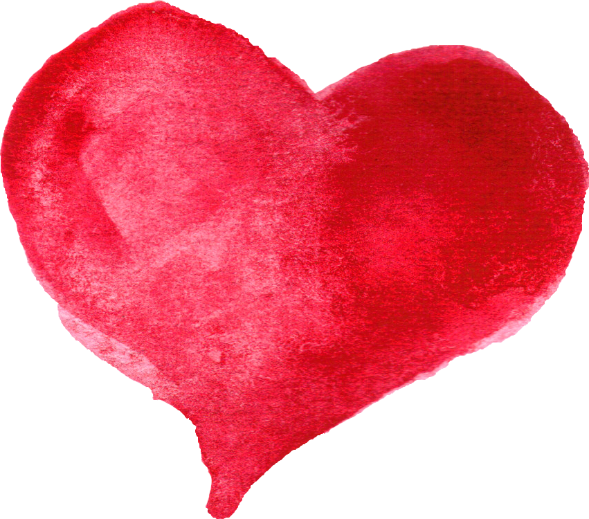

I Like You
Sandol Stoddard Warburg

I likeyouand I know why. I like you because you are a good person to like. I like you because when I tell you something special, you know it’s special And you remember it a long, long time. You say, “Remember when you told me something special?” And both of us remember.
When I think something is important you think it’s important too We have good ideas When I say something funny, you laugh I think I’mfunnyand you think I’m funny too Hah-hah!
I like you because you know whereI'm ticklish. And you don’t tickle me there except just a little tiny bit sometimes. But if you do, then I know where to tickle you too.
You know how to besilly
That’s why I like you
Boy are you ever silly
I never met anybody sillier than me till I met you
I like you because you know when it’s time to stop being silly
Maybe day after tomorrow
Maybe never
Too late, it’s a quarter past silly!
Sometimes we don’t say a word
We snurkle under fences
We spy secret places
If I am a goofus on the roofus hollering my head off
You are one too
If I pretend I am drowning, you pretend you are saving me
If I am getting ready to pop a paper bag,
then you are getting ready to jump
HOORAY!
That’s becauseyoureally like me
You really like me, don’t you?
And I really like you back
And you like me back and I like you back
And that’s the way we keep on going every day.
If you go away, then I go away too
or if I stay home, you send me a postcard
You don’t just say “Well see you around sometime, bye”
I like you a lot because of that
If I go away, I send you a postcard too
And I like you because if we go away together
And if we are in Grand Central Station
And if I get lost
Then you are the one that is yelling for me.
And I like youbecause when I am feeling sad
You don’t always cheer me up right away
Sometimes it is better to be sad
You can’t stand the others being so googly and gaggly every single minute
You want to think about things
It takes time
I like you because if I am mad at you
Then you are mad at me too
It’s awful when the other person isn’t
They are so nice and hoo-hoo you could just about punch them in the nose.
I like you because if I think I am going to throw up
then you are really sorry
You don’t just pretend you are busy looking at the birdies and all that
You say, maybe it was something you ate
You say, the same thing happened to me one time
And the same thing did.
Ifyoufind two four-leaf clovers, you give me one
If I find four, I give you two
If we only find three, we keep on looking
Sometimes we have good luck, and sometimes we don’t
If I break my arm, and if you break your arm too
Then it’s fun to have a broken arm
I tell you about mine, you tell me about yours
We are both sorry
We write our names and draw pictures
We show everybody and theywishthey had a broken arm too.
I like you because I don’t know why but
Everything that happens is nicer with you
I can’t remember when I didn’t like you
It must have been lonesome then
I like you because because because
I forget why I like you but I do.
So many reasons
On the 4th of July I like you because it’s the 4th of July
On the fifth of July, I like you too
If you and I had some drums and some horns and some horses
If we had some hats and some flags and some fire engines
We could be a HOLIDAY
We could be a CELEBRATION
We could be a WHOLE PARADE
See what I mean?
Even if it was the 999th of July
Even if it was August
Even if it was way down at the bottom of November
Even if it was no place particularin January
I would go on choosing you
And you would go on choosing me
Over and over again.
That’s how it would happen every time
I don’t know why
I guess I don’t know why I really like you
Why do I like you
I guess I just like you
I guess I just like you because I like you.